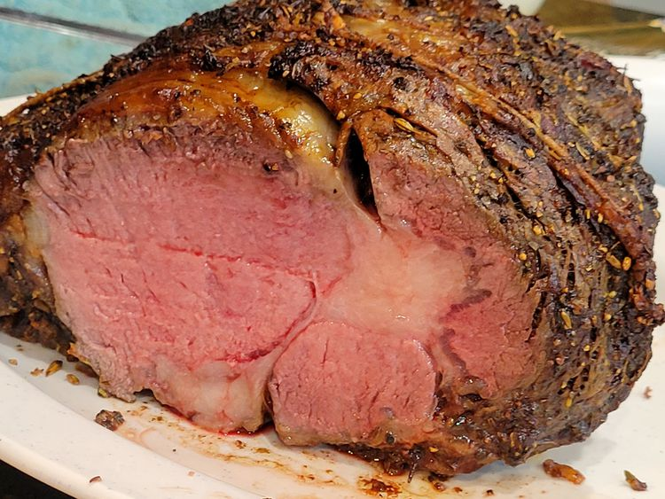

PRIME RIB

Description
Prime rib is a large, tender, and flavorful cut of beef from the primal rib section of a cow.
Ingredients
- 1 bone-in prime rib roast.
- 1/4 cup unsalted butter, softened.
- 1 tablespoon freshly ground black pepper.
- 1 teaspoon herbes de Provence.
- Kosher salt to taste.
Steps
- Gather the ingredients. Place prime rib roast on a plate and bring to room temperature, 2 to 4 hours. Preheat the oven to 500 degrees F (260 degrees C).
- Combine butter, pepper, and herbes de Provence in a bowl; mix until well blended. Spread butter mixture evenly over entire roast. Season roast generously with kosher salt.
- Roast the 4-pound roast in the preheated oven for 20 minutes. (If your roast is larger or smaller than 4 pounds, multiply the exact weight times 5 minutes.)
- Turn the oven off and, leaving the roast in the oven with the door closed, let the roast sit in the oven for 2 hours.
- Remove roast from the oven, slice, and serve.